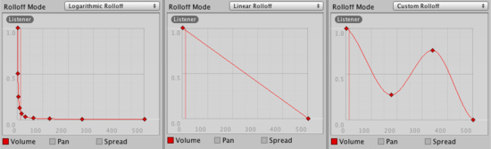

This document is unofficially translated by users.Please see the original document here. 翻訳に関する修正など、ご連絡はこちらまで。 Please send e-mail to here, when you have any question about the translation. |
 編集 (GitHub) |
Audio Source
Audio Sourceはシーン中にAudio Clipを再生します。もしAudio Clipが3D clipならば、ソースは与えられた位置で再生され距離で減衰するでしょう。音声はスピーカ (stereo to 7.1)(Spread) の間で広がり3Dと2D (PanLevel)で変形されます。これは減衰曲線による距離で制御できます。また、listenerは１つまたは複数のReverb Zones内の場合、反響音はソースに適用されます。(PRO only) ここのフィルタはよりリッチなオーディオ体験を各オーディオソースに適用できます。より詳細な事はAudio Effectsを見て下さい。
シーンビュー上のオーディオソースのギズモ表示とそのインスペクターの設定。
Properties
| Audio Clip | 再生されるサウンドクリップファイルの参照です。 |
| Mute | 有効ならば音は再生されるが無音です。 |
| Bypass Effects | すばやく"by-pass"フィルター効果をオーディオソースに適用します。簡単な方法はすべてのエフェクトにon/offと変えることです。 |
| Play On Awake | 有効の場合、サウンドはシーンが立ち上がった瞬間に再生を始めます。無効の場合、あなたはスクリプトから Play() コマンドを使う必要があります。 |
| Loop | 終わりに達したとき Audio Clip ループの作成を有効にします。 |
| Priority | シーンに存在するすべてのものの間でオーディオソースの優先順位を決定します。(Priority: 0 = most important. 256 = least important. Default = 128.)。 時折のスワップアウトを避けるため音楽トラックのに対しては0を使用してください。 |
| Volume | いかに大きな音でも Audio Listener からは１world unit (1 meter) の距離です。 |
| Pitch | Audio Clip のスローダウン・スピードアップのためのピッチ変化量。値１が通常の再生スピードです。 |
| 3D Sound Settings | 3Dサウンドならばオーディオソースに設定が適用されます。 |
| Pan Level | 3dエンジンがどのくらいオーディオソースに影響を与えるかの設定です。 |
| Spread | スピーカー空間上の3dステレオまたはマルチチャンネルサウンドが広がる角度の設定です。 |
| Doppler Level | どのくらいドップラー効果がオーディオソースに適用されるか決定します。(0がセットされてる場合、効果無しが適用されます) |
| Min Distance | MinDistanceの内側では、音は最大音量の可能性まで続くでしょう。MinDistanceの外側では減衰が始まるでしょう。音のMinDistanceの増加のために３次元世界の 'louder' を作成し、減衰のために３次元世界の 'quieter' を作成します。 |
| Max Distance | 距離はここで音が減衰して止まります。この位置を超えるとリスナーからMaxDistanceの音量を続け、それ以上減衰しないでしょう。 |
| loff Mode | どのくらいの速さで音が消えるかです。値が大きいと、リスナーが近ければ近いほど音が聞こえる前になります。(これはグラフによって決定されます) |
| Logarithmic Rolloff | 音はオーディオソースに近接すると大きくなりますが、離れたオブジェクトからは急速に減少します。 |
| Linear Rolloff | オーディオソースから遠ければ遠いほど、あなたはより小さく聞こえるでしょう。 |
| Custom Rolloff | オーディオソースからの音はあなたがロールオフのグラフ設定をどのようにするかで動作します。 |
| 2D Sound Settings | もし3Dサウンドの場合オーディオソースに設定は適用されます。 |
| Pan 2D | どのくらいエンジンがオーディオソースに効果を与えるか設定します。 |
ロールオフの種類(Types of Rolloff)
三つのロールオフモード: 対数、リニアそしてカスタムロールオフです。カスタムロールオフは音量の距離曲線を以下のようにすることで変更することができます。対数かリニアに設定されているとき音量の距離関数を変更しようとしたなら、自動的にカスタムロールオフに種類は変更されます。
距離関数(Distance Functions)
オーディオのいくつかのプロパティはオーディオソースとオーディオリスナー間の距離の関数を変更することができます。
Volume: Amplitude(0.0 - 1.0) の間。
Pan: Left(-1.0) から Right(1.0) の間。
Spread: Angle (degrees 0.0 - 360.0) の間。
Low-Pass (LowPassFilterがAudioSourceに適用されている場合のみ): Cutoff Frequency (22000.0-10.0)の間。
音量のための距離関数は、Pan, SpreadとLow-Passのオーディオフィルターです。オーディオリスナーに現在の距離をグラフ上にマークしています。
距離関数を変更するには、カーブを直接編集することができます。詳細は Editing Curves のガイドを見てください。
オーディオソースの作成(Creating Audio Sources)
オーディオソースはオーディオクリップの指定なしでは何もしません。クリップは再生される実際のサウンドファイルです。ソースはクリップの起動と停止、再生そして他のオーディオプロパティを変更するためのコントローラのようなものです。
新しいオーディオソースを作成するために:
- あなたのUnityプロジェクトにオーディオファイルをインポート。それらはこれからオーディオクリップです。
- メニューバーから に行きます。
- 新しいゲームオブジェクトを選択し、 を選びます。
- インスペクター上にオーディオソースのオーディオクリップのプロパティが割り当てられます。
Note: ひとつのオーディオクリップのためにアセットフォルダ上でオーディオソースを作成したいなら、あなたはシーンビューにオーディオクリップとオーディオソースのゲームオブジェクトをドラッグアンドドロップすることでゲームオブジェクトを自動的に作成することができます。
プラットフォーム別の詳細(Platform specific details)
 iOS
iOS
モバイルプラットフォーム上で圧縮されたオーディオは、より高速な圧縮のためのMP3としてエンコードされます。この圧縮はクリップの終了時にサンプルを削除することができ潜在的に"完璧なループ"のクリップを破ることに注意してください。クリップはサンプルクリッピング（広く実行出来るかのツール）を避けるためにMP3サンプルの境界が正しいこと確認してください。パフォーマンス上の理由から、オーディオクリップはAppleのハードウェアコーデックを使用して再生することができます。インポート時の設定で"Use Hardware"のチェックボックスを有効にして下さい。より詳細な参照はAudio Clipを見て下さい。
 Android
Android
モバイルプラットフォーム上で圧縮されたオーディオは、より高速な圧縮のためのMP3としてエンコードされます。この圧縮はクリップの終了時にサンプルを削除することができ潜在的に"完璧なループ"のクリップを破ることに注意してください。 クリップはサンプルクリッピング（広く実行出来るかのツール）を避けるためにMP3サンプルの境界が正しいこと確認してください。